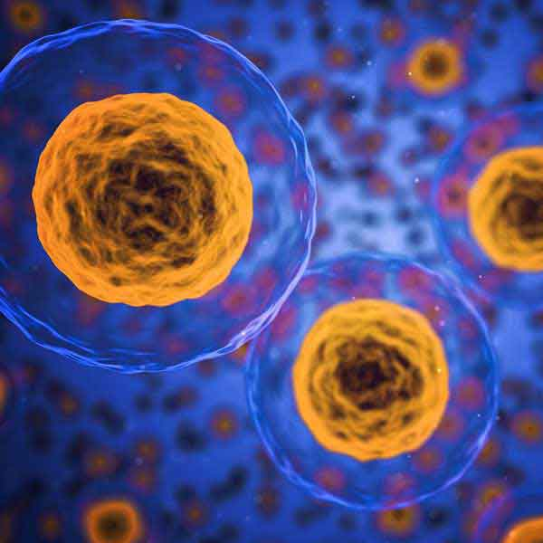

Který francouzský vědec vyvinul vakcínu proti vzteklině?
Jak se jmenuje toto pečivo, které Francouzové jedí při snídani? (Konflikt mezi severem a jihem způsobil vznik několika možných jmen)
Henri Matisse byl předchůdcem malířského hnutí zvaného Fauvism
Jaká je nejdelší řeka ve Francii?
Které z těchto francouzských památek se nacházejí v Paříži? (2 možnosti)